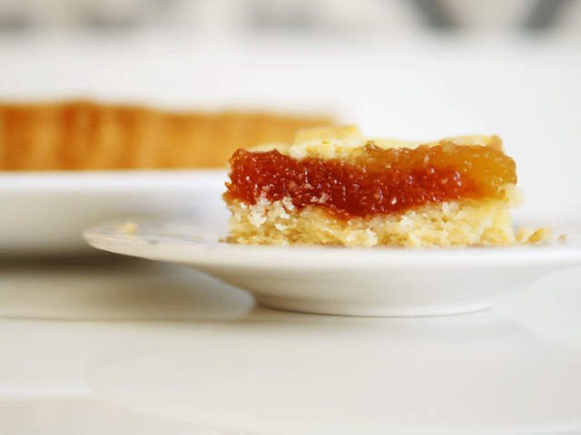

Lo primero que vamos a hacer es poner en un bol la manteca cortada en cubitos. Que no
esté super
fría ni muy derretida. La vamos a batir con el azúcar hasta que se forme una crema
clarita y
bien lisa.
Ahora vamos a sumar el huevo y la yema, la esencia de vainilla y la ralladura de limón,
y
volvemos a batir. No se asusten si al principio parece que la mezcla se “corta”, es
hasta que
las yemas se integren bien con la manteca.
Cuando la preparación esté unida y lisa de nuevo, vamos a dejar de lado la batidora y
agarrar
una espátula. Agregamos el harina leudante y la vamos incorporando con la espátula hasta
que se
pueda mezclar con las manos. La idea es integrar la masa, no amasarla como un pan! Una
vez que
esté bien unida, la ponemos en un film y la llevamos a la heladera 30 minutos.
Mientras vamos con el relleno de pasta frola: cortamos el dulce (o los dulces en mi
caso) en
cubitos, lo ponemos en un bol, agregamos una cucharada de agua aproximadamente y lo
llevamos al
microondas un minuto a potencia media para derretirlo. Cuando sale, lo aplastamos con un
tenedor
o un pisapapas. Tengamos cuidado en esta parte, porque el dulce de membrillo se calienta
y quema
mucho!
Sacamos la masa de la heladera y vamos a armar la base en un molde con la técnica de los
capos
n°1, aplastándola con el puño y un film. (en el video se ve clarísimo). Acomodamos los
bordes y
rellenamos la pasta frola con los dulces de membrillo y batata derretidos.
Ahora viene la magia de la técnica de los capos n°3: la decoración. Ponemos la masa
entre dos
films, la estiramos y la mandamos al congelador. Sacamos el film de arriba y cortamos
con una
cuchilla las tiras, prestado atención de cortar el film de abajo también. Después
levantamos
desde el film la tira y la ponemos directamente sobre el relleno, cuando esté bien
acomodada,
sacamos el film y listo!
La llevamos al horno a 200° por unos 40 minutos o hasta que esté doradita.

Como hacer un bizcocho de naranja
Precalentar el horno a 180 grados.
En un bol grande, batir los huevos con el azúcar hasta obtener una mezcla espumosa.
Añadir el aceite, el jugo de naranja y la ralladura de naranja y mezclar bien hasta
integrar.
Añadir la harina tamizada y la levadura en polvo y mezclar suavemente hasta que quede
homogéneo.
Enmantecar y enharinar un molde para bizcochos (22 cm aprox.) y verter la mezcla.
Hornear durante 35-45 minutos o hasta que el bizcocho esté doradito y firme al tacto.
Dejar enfriar completamente antes de desmoldar y servir.